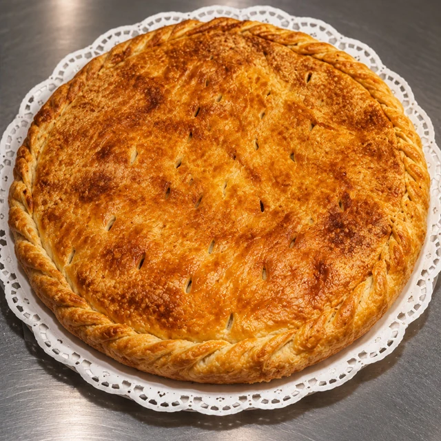
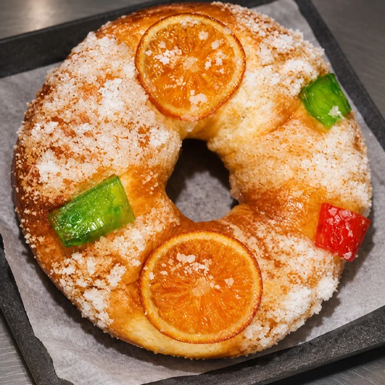
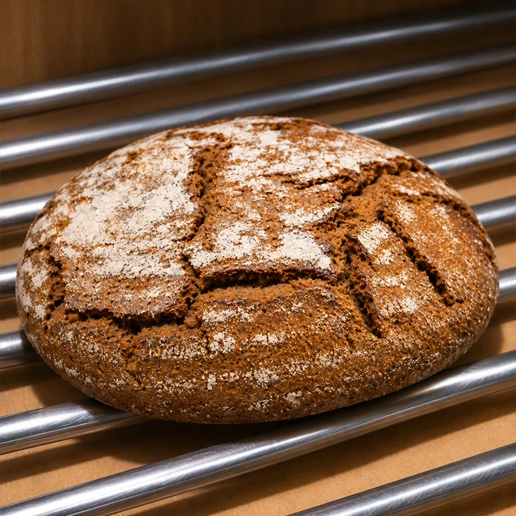
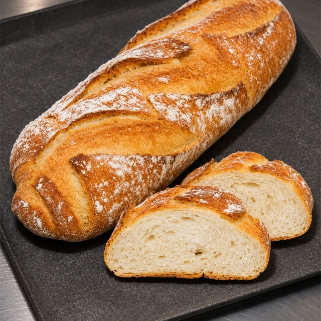
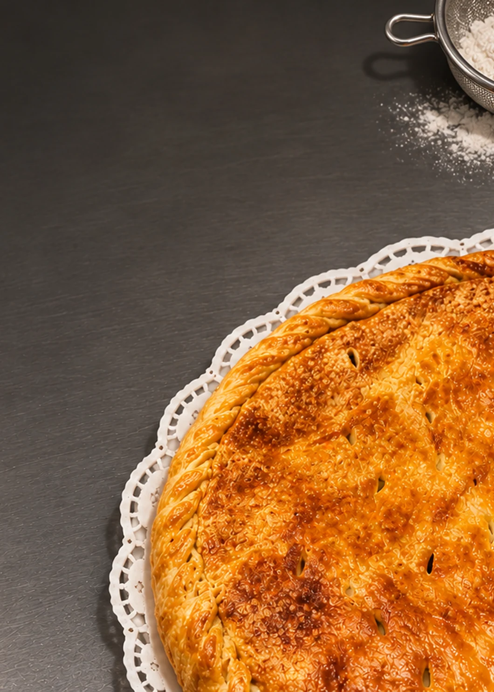

Empanada casera
Empanada salada de queso de cabra y cebolla caramelizada, con relleno cremoso y masa crujiente.
22,00 €

Empanada salada de queso de cabra y cebolla caramelizada, con relleno cremoso y masa crujiente.
22,00 €

Roscón tradicional entero para compartir en los desayunos y meriendas de Navidad.
25,00 €
Pan alargado de aspecto rústico, con superficie enharinada.
1,30 €

Hogaza de corteza oscura y acabado enharinado.
3,00 €

Barra rústica de corteza dorada y cortes superiores marcados.
2,65 €
Pieza grande de formato alargado y acabado rústico.
3,00 €
De lunes a viernes de 9:00 a 15:00 y de 17:00 a 20:30. Sábados y domingos de 9:00 a 14:00.
Nuestro producto estrella son, sin duda, las empanadas. Aunque, si hablamos de una época específica del año, destacan nuestros roscones de Reyes.
¡Sí! Todos nuestros productos son caseros.
Entre nuestras opciones encontrarás la empanada de queso de cabra y cebolla caramelizada. Consulta en tienda el surtido disponible.
Pregúntanos antes de comprar. Si tienes alguna alergia o intolerancia, indícanos el producto que te interesa para revisar su información.

Nos encontramos en el barrio de Sanchinarro, 28050 Madrid.